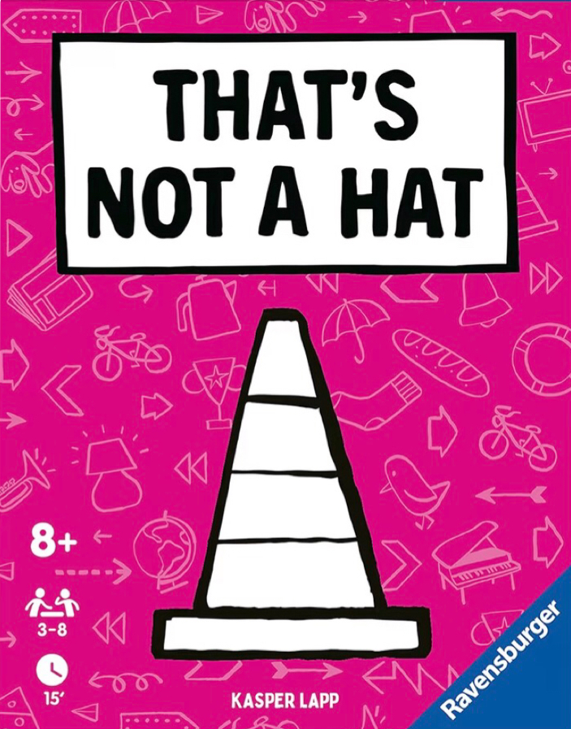

Bagi 1 kartu terbuka ke tiap pemain. Sisanya tumpuk ditengah terbuka.
Pemain pertama ambil kartu tumpukan paling atas, perlihatkan ke semua orang, kartu dibalik, oper kartu sesuai arah panah kartu.
Wajib tertutup. Sebut: "Ini hadiah Topi untukmu!" (sebutkan nama kado sesuai gambar).
Lupa isinya? Tetap yakin! Bohong adalah inti dari game ini. Jangan sampai dicurigai.
Penerima bisa tuduh: "Itu bukan!". Jika ditantang, kartu dibuka.
Yang salah (ketahuan bohong/salah tuduh) ambil kartu jadi Poin Minus.
Jika ada pemain dapat 3 kartu minus, game selesai. Minus paling sedikit Menang!